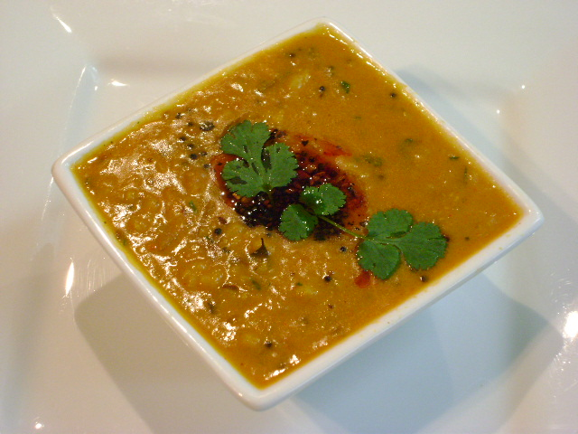

Daal

Description
Daal is a soup with lentils as its main ingredient;
it may be vegetarian or include meat, and may use brown, red, yellow, green or black lentils, with or without the husk.
Dehulled yellow and red lentils disintegrate in cooking, making a thick soup. It is a staple food throughout Europe, Latin America and the Middle East.
Ingredients
- coconut oil
- onions
- garlic
- ginger
- turmeric
- coriander
- cumin
- garam masala
- red lentils
- vegetable broth
Steps
- Heat the coconut oil in a skillet or saucepan. Add the chopped onions, and sauté for 2-3 minutes until translucent. Then add the garlic and ginger sauté for another minute until fragrant. Lastly, add the spices, and sauté for a few seconds to unfold flavors.
- Place the lentils in a fine-mashed sieve and rinse until cold running water. Then add them to the onion mixture in the skillet. Pour in the vegetable broth, stir to combine, and bring to a simmer. Cook covered for 8-10 minutes, or until the lentils have absorbed most of the liquid.
- Add the coconut milk and strained tomatoes (if using) and simmer another 5-10 minutes, or until the lentils are tender. (If the sauce is too thick, add a little more broth or coconut milk, until the desired consistency is reached). Season with salt, pepper, coconut sugar, and lime juice to taste.